CS229 Lecture
notes
翻译：CycleUser
Part IV
生成学习算法，Generative Learning
algorithms
目前为止，我们讲过的学习算法的模型都是p
(y|x;θ)，也就是给定 x 下的 y 的条件分布，以 θ 为参数。例如，逻辑回归中就是以 hθ(x) = g(θT x) 作为 p (y|x;θ) 的模型，这里的 g 是一个 S型函数（sigmoid function）。接下来，咱们要讲一下一种不同类型的学习算法。
设想有这样一种分类问题，我们要学习基于一个动物的某个特征来辨别它是大象（y=1）还是小狗(y=0)。给定一个训练集，用逻辑回归或者基础版的感知器算法（perceptron algorithm）这样的一个算法能找到一条直线，作为区分开大象和小狗的边界。接下来，要辨别一个新的动物是大象还是小狗，程序就要检查这个新动物的值落到了划分出来的哪个区域中，然后根据所落到的区域来给出预测。
还有另外一种方法。首先，观察大象，然后我们针对大象的样子来进行建模。然后，再观察小狗，针对小狗的样子另外建立一个模型。最后要判断一种新动物归属哪一类，我们可以把新动物分别用大象和小狗的模型来进比对，看看新动物更接近哪个训练集中已有的模型。
例如逻辑回归之类的直接试图建立 p(y|x)
的算法，以及感知器算法（perceptron
algorithm）等直接用投图（mappings directly）的思路来判断对应 X 的值落到了 {0, 1} 中哪个区域的算法，这些都叫判别式学习算法（discriminative learning algorithms）。和之前的这些判别式算法不同，下面我们要讲的新算法是对 p(x|y) 和 p(y)来进行建模。这类算法叫做生成学习算法（generative learning algorithms）。例如如果
y 是用来表示一个样例是 小狗 (0) 或者
大象 (1)，那么p(x|y = 0)就是对小狗特征的分布的建模，而p(x|y = 1)就是对大象特征分布的建模。
对 p(y) (叫做 class priors，我没找到合适的中文翻译对应这个概念) 和p(x|y) 进行建模之后，我没的算法就是用贝叶斯规则（Bayes rule）来推导对应给定的 x 的 y 的后验分布（posterior
distribution）：

这里的分母（denominator）为：p(x)
= p(x|y = 1)p(y = 1) + p(x|y = 0)p(y = 0)（这个等式关系可以根据概率的标准性质来推导验证，译者注：其实就是条件概率），这样接下来就可以把它表示成我们熟悉的 p(x|y) 和 p(y) 的形式了。实际上如果我们计算p(y|x) 来进行预测，那就并不需要去计算这个分母，因为有下面的等式关系：

1 高斯判别分析（Gaussian discriminant analysis）
咱们要学的第一个生成学习算法就是高斯判别分析（Gaussian
discriminant analysis ，缩写为GDA。译者注：高斯真棒！）在这个模型里面，我们假设 p(x|y) 是一个多元正态分布。所以首先咱们简单讲一下多元正态分布的一些特点，然后再继续讲 GDA高斯判别分析模型。
1.1 多元正态分布（multivariate normal distribution）
n维多元正态分布，也叫做多变量高斯分布，参数为一个均值n维向量μ ∈
Rn ，以及一个协方差矩阵Σ ∈
Rn×n，其中Σ ≥ 0 是一个对阵（symmetric）的半正定（positive semi-definite）矩阵。当然也可以写成“N (μ, Σ)” 的分布形式，密度（density）函数为：
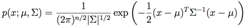
在上面的等式中，“|Σ|”的意思是矩阵Σ的行列式（determinant）。对于一个在 N(μ,Σ) 分布中的随机变量 X ，其平均值（跟正态分布里面差不多，所以并不意外）就是 μ 了：
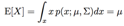
随机变量Z是一个有值的向量（vector-valued random variable），Z 的协方差（covariance）的定义是：Cov(Z) = E[(Z _ E[Z])(Z _ E[Z])T ]。这是对实数随机变量的方差（variance）这一概念的泛化扩展。这个协方差还可以定义成Cov(Z) = E[ZZT]_(E[Z])(E[Z])T（你可以自己证明一下这两个定义实际上是等价的。）如果
X 是一个多变量正态分布，即 X _ N (μ, Σ)，则有：

下面这些样例是一些高斯分布的密度图，如下图所示：

最左边的图，展示的是一个均值为0（实际上是一个2x1 的零向量）的高斯分布，协方差矩阵就是Σ = I (一个
2x2 的单位矩阵，identity
matrix)。这种均值为0 并且协方差矩阵为单位矩阵的高斯分布也叫做标准正态分布。中间的图中展示的是均值为0而协方差阵是0.6I 的高斯分布的密度；最右边的展示的是协方差阵Σ = 2I。从这几个图可以看出，随着协方差矩阵Σ变大，高斯分布的形态就变得更宽平（spread-out），而如果协方差矩阵Σ变小，分布就会更加集中（compressed）。
来看一下更多的样例：

上面这几个图展示的是均值为0，但协方差矩阵各不相同的高斯分布，其中的协方差矩阵依次如下所示：

第一幅图还跟之前的标准正态分布的样子很相似，然后我们发现随着增大协方差矩阵Σ 的反对角线（off-diagonal）的值，密度图像开始朝着 45_ 方向 (也就是 x1 = x2 所在的方向)逐渐压缩（compressed）。
看一下三个同样分布密度图的轮廓图（contours）能看得更明显：

下面的是另外一组样例，调整了协方差矩阵Σ:

上面这三个图像对应的协方差矩阵分别如下所示：

从最左边的到中间（译者注：注意，左边和中间的这两个协方差矩阵中，右上和左下的元素都是负值！）很明显随着协方差矩阵中右上左下这个对角线方向元素的值的降低，图像还是又被压扁了（compressed），只是方向是反方向的。最后，随着我们修改参数，通常生成的轮廓图（contours）都是椭圆（最右边的图就是一个例子）。
再举一些例子，固定协方差矩阵为单位矩阵，即Σ
= I，然后调整均值μ，我们就可以让密度图像随着均值而移动：

上面的图像中协方差矩阵都是单位矩阵，即
Σ = I，对应的均值μ如下所示：

1.2 高斯判别分析模型（Gaussian Discriminant Analysis model）
假如我们有一个分类问题，其中输入特征
x 是一系列的连续随机变量（continuous-valued random variables），那就可以使用高斯判别分析（Gaussian Discriminant Analysis ，缩写为 GDA）模型，其中对 p(x|y) 用多元正态分布来进行建模。这个模型为：
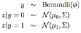
分布写出来的具体形式如下：
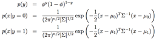
在上面的等式中，模型的参数包括φ, Σ, μ0 和 μ1。（要注意，虽然这里有两个不同方向的均值向量μ0 和 μ1，针对这个模型还是一般只是用一个协方差矩阵Σ。）取对数的似然函数（log-likelihood）如下所示：

通过使 l 取得最大值，找到对应的参数组合，然后就能找到该参数组合对应的最大似然估计，如下所示（参考习题集1）：

用图形化的方式来表述，这个算法可以按照下面的图示所表示：
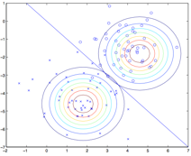
图中展示的点就是训练数据集，图中的两个高斯分布就是针对两类数据各自进行的拟合。要注意这两个高斯分布的轮廓图有同样的形状和拉伸方向，这是因为他们都有同样的协方差矩阵Σ，但他们有不同的均值μ0 和 μ1 。此外，图中的直线给出了p (y = 1|x) = 0.5 这条边界线。在这条边界的一侧，我们预测 y = 1 是最大可能的结果，而另一侧，就估计 y = 0。
1.3 讨论：高斯判别分析（GDA）与逻辑回归（logistic regression）
高斯判别分析模型与逻辑回归有很有趣的相关性。如果我们把变量（quantity）p (y = 1|x; φ, μ0, μ1, Σ) 作为一个 x 的函数，就会发现可以用如下的形式来表达：
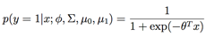
其中的 θ
是对φ, Σ, μ0, μ1的某种函数。这就是逻辑回归（也是一种判别分析算法）用来对p
(y = 1|x) 建模的形式。
注：上面这里用到了一种转换，就是重新对x(i)向量进行了定义，在右手侧（right-hand-side）增加了一个额外的坐标x(i) = 1，然后使之成为了一个 n+1维的向量；具体内容参考习题集1。
这两个模型中什么时候该选哪一个呢？一般来说，高斯判别分析（GDA）和逻辑回归，对同一个训练集，可能给出的判别曲线是不一样的。哪一个更好些呢？
我们刚刚已经表明，如果p(x|y)是一个多变量的高斯分布（且具有一个共享的协方差矩阵Σ），那么p(y|x)则必然符合一个逻辑函数（logistic function）。然而，反过来，这个命题是不成立的。例如假如p(y|x)是一个逻辑函数，这并不能保证p(x|y)一定是一个多变量的高斯分布。这就表明高斯判别模型能比逻辑回归对数据进行更强的建模和假设（stronger modeling assumptions）。这也就意味着，在这两种模型假设都可用的时候，高斯判别分析法去拟合数据是更好的，是一个更好的模型。尤其当p(x|y)已经确定是一个高斯分布（有共享的协方差矩阵Σ），那么高斯判别分析是渐进有效的（asymptotically efficient）。实际上，这也意味着，在面对非常大的训练集（训练样本规模 m 特别大）的时候，严格来说，可能就没有什么别的算法能比高斯判别分析更好（比如考虑到对 p(y|x) 估计的准确度等等）。所以在这种情况下就表明，高斯判别分析（GDA）是一个比逻辑回归更好的算法；再扩展一下，即便对于小规模的训练集，我们最终也会发现高斯判别分析（GDA）是更好的。
奈何事有正反，由于逻辑回归做出的假设要明显更弱一些（significantly
weaker），所以因此逻辑回归给出的判断也更健壮（robust），也对错误的建模假设不那么敏感。有很多不同的假设集合都能够将p(y|x)引向逻辑回归函数。例如，如果x|y = 0 _ Poisson(λ0) 是一个泊松分布，而x|y = 1 _ Poisson(λ1)也是一个泊松分布，那么p(y|x)也将是适合逻辑回归的（logistic）。逻辑回归也正适用于这类的泊松分布的数据。但对这样的数据，如果我们强行使用高斯判别分析（GDA），然后用高斯分布来拟合这些非高斯数据，那么结果的可预测性就会降低，而且GDA这种方法也许可行，也有可能是不能用。
总结一下也就是：高斯判别分析方法（GDA）能够建立更强的模型假设，并且在数据利用上更加有效（比如说，需要更少的训练集就能有“还不错的”效果），当然前提是模型假设争取或者至少接近正确。逻辑回归建立的假设更弱，因此对于偏离的模型假设来说更加健壮（robust）得多。然而，如果训练集数据的确是非高斯分布的（non-Gaussian），而且是有限的大规模数据（in the limit of large datasets），那么逻辑回归几乎总是比GDA要更好的。因此，在实际中，逻辑回归的使用频率要比GDA高得多。（关于判别和生成模型的对比的相关讨论也适用于我们下面要讲的朴素贝叶斯算法（Naive Bayes），但朴素贝叶斯算法还是被认为是一个非常优秀也非常流行的分类算法。）
2 朴素贝叶斯法（Naive Bayes）
在高斯判别分析（GDA）方法中，特征向量 x 是连续的，值为实数的向量。下面我们要讲的是当 xi 是离散值的时候来使用的另外一种学习算法。
下面就来继续看一个之前见过的样例，来尝试建立一个邮件筛选器，使用机器学习的方法。这回咱们要来对邮件信息进行分类，来判断是否为商业广告邮件（就是垃圾垃圾垃圾邮件），还是非垃圾邮件。在学会了怎么实现之后，我们就可以让邮件阅读器能够自动对垃圾信息进行过滤，或者单独把这些垃圾邮件放进一个单独的文件夹中。对邮件进行分类是一个案例，属于文本分类这一更广泛问题集合。
假设我们有了一个训练集（也就是一堆已经标好了是否为垃圾邮件的邮件）。要构建垃圾邮件分选器，咱们先要开始确定用来描述一封邮件的特征xi 有哪些。
我们将用一个特征向量来表示一封邮件，这个向量的长度等于字典中单词的个数。如果邮件中包含了字典中的第 i 个单词，那么久令 xi = 1；反之则xi = 0。例如下面这个向量：
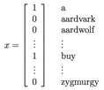
就用来表示一个邮件，其中包含了两个单词
“a” 和 “buy”，但没有单词 “aardvark”， “aardwolf” 或者 “zymurgy” 。这个单词集合编码整理成的特征向量也成为词汇表（vocabulary,），所以特征向量 x 的维度就等于词汇表的长度。
注：实际应用中并不需要遍历整个英语词典来组成所有英语单词的列表，实践中更常用的方法是遍历一下训练集，然后把出现过一次以上的单词才编码成特征向量。这样做除了能够降低模型中单词表的长度之外，还能够降低运算量和空间占用，此外还有一个好处就是能够包含一些你的邮件中出现了而词典中没有的单词，比如本课程的缩写CS229。有时候（比如在作业里面），还要排除一些特别高频率的词汇，比如像冠词the，介词of 和and 等等；这些高频率但是没有具体意义的虚词也叫做stop words，因为很多文档中都要有这些词，用它们也基本不能用来判定一个邮件是否为垃圾邮件。
选好了特征向量了，接下来就是建立一个生成模型（generative
model）。所以我们必须对p(x|y)进行建模。但是，假如我们的单词有五万个词，则特征向量n x ∈
{0, 1}50000 (即 x 是一个 50000维的向量，其值是0或者1)，如果我们要对这样的 x
进行多项式分布的建模，那么就可能有250000 种可能的输出，然后就要用一个 (250000 _1)维的参数向量。这样参数明显太多了。
要给p(x|y)建模，先来做一个非常强的假设。我们假设特征向量xi 对于给定的 y 是独立的。这个假设也叫做朴素贝叶斯假设（Naive Bayes ，NB assumption），基于此假设衍生的算法也就叫做朴素贝叶斯分选器（Naive Bayes classifier）。例如，如果 y = 1 意味着一个邮件是垃圾邮件；然后其中“buy” 是第2087个单词，而 “price”是第39831个单词；那么接下来我们就假设，如果我告诉你 y = 1，也就是说某一个特定的邮件是垃圾邮件，那么对于x2087 (也就是单词 buy 是否出现在邮件里)的了解并不会影响你对x39831 (单词price出现的位置)的采信值。更正规一点，可以写成 p(x2087|y) = p(x2087|y, x39831)。（要注意这个并不是说x2087 和 x39831这两个特征是独立的，那样就变成了p(x2087) = p(x2087|x39831)，我们这里是说在给定了 y 的这样一个条件下，二者才是有条件的独立。）
然后我们就得到了等式：
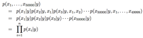
第一行的等式就是简单地来自概率的基本性质，第二个等式则使用了朴素贝叶斯假设。这里要注意，朴素贝叶斯假设也是一个很强的假设，产生的这个算法可以适用于很多种问题。
我们这个模型的参数为 φi|y=1 = p (xi = 1|y = 1), φi|y=0 = p (xi = 1|y = 0), 而 φy = p (y = 1)。和以往一样，给定一个训练集{(x(i),y(i)); i = 1, ..., m}，就可以写出下面的联合似然函数：
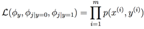
找到使联合似然函数取得最大值的对应参数组合
φy , φi|y=0 和 φi|y=1 就给出了最大似然估计：

在上面的等式中，“∧”这个符号的意思是逻辑“和”。这些参数有一个非常自然的解释。例如φj|y=1 is正是单词 j 出现的邮件中垃圾邮件所占（y = 1）的比例。
拟合好了全部这些参数之后，要对一个新样本的特征向量
x 进行预测，只要进行如下的简单地计算：

然后选择有最高后验概率的概率。
最后我们要注意，刚刚我们对朴素贝叶斯算法的使用中，特征向量
xi 都是二值化的，其实特征向量也可以是多个离散值，比如{1, 2, ..., ki}这样也都是可以的。这时候只需要把对p(xi|y) 的建模从伯努利分布改成多项式分布。实际上，即便一些原始的输入值是连续值（比如我们第一个案例中的房屋面积），也可以转换成一个小规模的离散值的集合，然后再使用朴素贝叶斯方法。例如，如果我们用特征向量 xi 来表示住房面积，那么就可以按照下面所示的方法来对这一变量进行离散化：
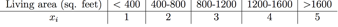
这样，对于一个面积为 890 平方英尺的房屋，就可以根据上面这个集合中对应的值来把特征向量的这一项的值设置为3.然后就可以用朴素贝叶斯算法，并且将p(xi|y)作为多项式分布来进行建模，就都跟前面讲过的内容一样了。当原生的连续值的属性不太容易用一个多元正态分布来进行建模的时候，将其特征向量离散化然后使用朴素贝叶斯法（NB）来替代高斯判别分析法（GDA），通常能形成一个更好的分类器。
2.1 拉普拉斯光滑（Laplace smoothing）
刚刚讲过的朴素贝叶斯算法能够解决很多问题了，但还能对这种方法进行一点小调整来进一步提高效果，尤其是应对文本分类的情况。我们来简要讨论一下一个算法当前状态的一个问题，然后在讲一下如何解决这个问题。
还是考虑垃圾邮件分类的过程，设想你学完了CS229的课程，然后做了很棒的研究项目，之后你决定在2003年6月（译者注：作者这讲义一定写得很早）把自己的作品投稿到NIPS会议，这个NIPS是机器学习领域的一个顶级会议，递交论文的截止日期一般是六月末到七月初。你通过邮件来对这个会议进行了讨论，然后你也开始受到带有 nips 四个字母的信息。但这个是你第一个NIPS论文，而在此之前，你从来没有接到过任何带有 nips 这个单词的邮件；尤其重要的是，nips 这个单词就从来都没有出现在你的垃圾/正常邮件训练集里面。加入这个 nips 是你字典中的第35000个单词那么你的朴素贝叶斯垃圾邮件筛选器就要对参数φ35000|y 进行最大似然估计，如下所示：
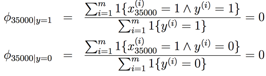
也就是说，因为之前程序从来没有在别的垃圾邮件或者正常邮件的训练样本中看到过 nips 这个词，所以它就认为看到这个词出现在这两种邮件中的概率都是0.因此当要决定一个包含 nips 这个单词的邮件是否为垃圾邮件的时候，他就检验这个类的后验概率，然后得到了：

这是因为对于“ ni=1 p(xi|y)”中包含了p(x35000|y) = 0的都加了起来，也就还是0。所以我们的算法得到的就是 0/0，也就是不知道该做出怎么样的预测了。
然后进一步拓展一下这个问题，统计学上来说，只因为你在自己以前的有限的训练数据集中没见到过一件事，就估计这个事件的概率为零，明显是个坏主意。假设问题是估计一个多项式随机变量 z ，其取值范围在{1, ..., k} 之内。接下来就可以用φi = p (z = i) 来作为多项式参数。给定一个 m 个独立观测{z(1), ..., z(m)} 组成的集合，然后最大似然估计的形式如下：
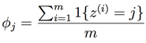
正如咱们之前见到的，如果我们用这些最大似然估计，那么一些φj可能最终就是零了，这就是个问题了。要避免这个情况，咱们就可以引入拉普拉斯光滑（Laplace smoothing），这种方法把上面的估计替换成：
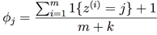
这里首先是对分子加1，然后对分母加K，要注意Σkj=1 φj = 1依然成立（自己检验一下），这是一个必须有的性质，因为φj 是对概率的估计，然后所有的概率加到一起必然等于1。另外对于所有的 j 值，都有φj ≠0，这就解决了刚刚的概率估计为零的问题了。在某些特定的条件下（相当强的假设条件下，arguably quite strong），可以发现拉普拉斯光滑还真能给出对参数φj 的最佳估计（optimal estimator）。
回到我们的朴素贝叶斯分选器问题上，使用了拉普拉斯光滑之后，对参数的估计就写成了下面的形式：

（在实际应用中，通常是否对φy 使用拉普拉斯并没有太大影响，因为通常我们会对每个垃圾邮件和非垃圾邮件都有一个合适的划分比例，所以φy 会是对p (y = 1)的一个合理估计，无论如何都会与零点有一定距离。）
2.2 针对文本分类的事件模型（Event models for text classification）
到这里就要给咱们关于生成学习算法的讨论进行一下收尾了，所以就接着讲一点关于文本分类方面的另一个模型。我们刚已经演示过的朴素贝叶斯方法能够解决很多分类问题了，不过还有另一个相关的算法，在针对文本的分类效果还要更好。
在针对文本进行分类的特定背景下，咱们上面讲的朴素贝叶斯方法使用的是一种叫做多元伯努利事件模型。在这个模型里面，我们都是在假设这个邮件中的内容首先是随机生成的（根据类的先验，class priors， p(y)，就是一个随机变量），而不管这个垃圾邮件或者非垃圾邮件的发送者是否还会再给你发一次消息。然后，这个发邮件的人就遍历整个词典，然后根据概率分布p (xi = 1|y) = φi|y，独立地决定是否在邮件中包含每一个单词 i 。这样的话，这个消息的概率就是p(y)  ni=1 p(xi|y)。
ni=1 p(xi|y)。
下面就是一个不同的模型，叫做多项式事件模型。要描述这个模型，我们要用一个不同的记号和特征集合来表示邮件。我们用xi 来表示邮件中的第i个单词。这样xi 现在就是一个整形了，取值范围在 {1, ..., |V |}中，其中|V |指代的是词汇表（也就是字典）的长度。这样一个由n个单词组成的邮件现在就表示成了一个n维向量(x1,x2,...,xn)；要注意这里的n可以根据文档的变化而变化。例如，如果一个邮件的开头是“A NIPS . . .” ，那么x1 = 1 (“a” 是词典中的第一个)，而x2 = 35000 (这是假设 “nips”是词典中的第35000个)。
在多项式事件模型中，我们假设邮件的生成是通过一个随机过程的，而是否为垃圾邮件是首先决定的（根据p(y)），这个和之前的模型假设一样。然后邮件的发送者写邮件首先是要生成 从对单词(p(x1|y))的某种多项式分布中生成 x1.然后第二部是独立于 x1 来生成 x2 ，但也是从相同的多项式分布中来选取，然后是 x3、x4 等等，以此类推，直到生成了整个邮件中的所有的此。因此，一个邮件的总体概率就是p(y)  ni=1 p(xi|y)。咬住以这个方程看着和我们之前那个多元伯努利事件模型里面的邮件概率很相似，但实际上这里面的意义完全不同了。尤其是这里的xi|y现在是一个多项式分布了，而不是伯努利分布了。
ni=1 p(xi|y)。咬住以这个方程看着和我们之前那个多元伯努利事件模型里面的邮件概率很相似，但实际上这里面的意义完全不同了。尤其是这里的xi|y现在是一个多项式分布了，而不是伯努利分布了。
我们新模型的参数还是φy = p(y)，这个跟以前一样，然后还有φk|y=1 = p(xj =k|y=1) (对任何 j) 以及 φi|y=0 =p(xj =k|y=0)。要注意这里我们已经假设了对于任何j 的值，p(xj|y)这个概率都是相等的，也就是意味着在这个哪个词会生成的这个分布不依赖这个词在邮件中的位置j（the distribution according to which a word is
generated does not depend on its position j within the email）。
如果给定一个训练集{(x(i),y(i)); i = 1, ..., m}，其中 x(i) = (x(i),x(i),...,x(i))（这里的n是在第i个训练样本中的单词数目），那么这个数据的似然函数如下所示：
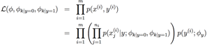
让上面的这个函数最大化就可以产生对参数的最大似然估计：

如果使用拉普拉斯光滑（实践中会用这个方法来提高性能）来估计φk|y=0 和 φk|y=1，就在分子上加1，然后分母上加|V |，就得到了下面的等式：
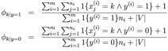
当然了，这个并不见得就是一个最好的分类算法，不过朴素贝叶斯分选器通常用起来还都出乎意料地那么好。所以这个方法就是一个很好的“首发选择”，因为它很简单又很好实现。